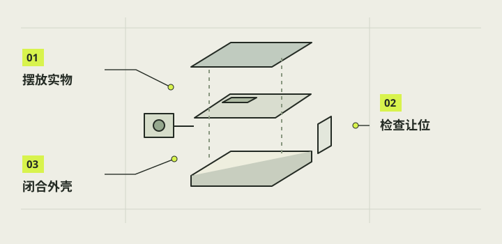

外观设计与内部布局
这一章把喜欢的相机外观变成能检查的内部布局。先用真实零件和可维修的装入路径决定壳体，再调整握持与视觉比例。首页三种外观只表达可能性，只有高方盒对应 当前项目；两侧概念相机没有完成结构验证，不能当作可打印模型。

本章完成目标
- 画出与实际零件对应的壳体和内部位置图
- 为线缆、散热和拆装留下可检查空间
- 标明当前组合、条件替换件和未冻结的外观
开始前准备好
- 已完成第02章零件辨认和第03章接口关系梳理
- 拿到所用屏幕、主控、相机、电池、控件的实物与尺寸
- 第10章控件与供电方案已有可追溯的接线记录
- 包络
- 零件连同插头、排线弯曲和操作手指需要占用的空间。
- 让位
- 壳体主动给其他零件或装入动作留下的间隙。
- 维修路径
- 不破坏主壳即可按顺序装入、拔出和更换零件的动作路线。
先分清概念图与制造基线
把喜欢的正面、侧面和顶部轮廓贴在一张草图上，再把真实屏幕、镜头、按钮、拨杆和底盖开口标进去。当前项目的主壳名义外廓是125×78×106毫米，顶部屏幕与正面小镜头属于这台方盒的布局；这组尺寸只服务于当前组合。两侧概念外形没有同等的安装、强度或打印文件，不要拿渲染图量孔位。
注意 / 图片透视和像素距离不能替代卡尺或模型尺寸。
给每个真实零件画完整占位
逐件测外形与连接端，记录主控板、相机板、屏幕边框、电池、开关、充电母口的方向；再把插头胶壳、软排线自然弯曲和手指可达范围补进包络。旧整合包的电池依据约48×42×18毫米，后续V31对应另一块48×40×20毫米电池，二者不能只按版本号互换。散热开口也要保留，不用胶或线团填满。
注意 / 软包电池不得靠挤压外皮换取装配余量。
按可装入顺序检查整套组合
以整合包中的V27主壳与共用件、V28载架和长销、V29成对镜头框、A_down盒架和圆盘为基线，而不是把所有最高编号件拼在一起。若使用新电池，V31的09盒体与07面盖成套替换旧09和07；G2充电口和N3遮光斗是另列的后续件。让屏幕、镜头、空载架、控件、电池、Pi、底盖依次进入模型，检查每一步有没有退路。
注意 / 静态终位不相交，不代表沿途能装入。
把操作、理线和热留在设计里
从开着的底盖观察两侧镜头锁键、三根36长销、拨杆防退出键和电池6／7鞋键是否能用手或工具接近。让相机排线、屏幕排线和供电插头各自缓弯，避开拨杆扫动区、盖扣、散热孔及会夹线的拼缝。完整外壳主要用既有打印卡件，按钮和拨杆则用原器件自带螺母，不凭空增设一套螺丝规格。
注意 / 不能把胶接、卡扣或散热效果仅凭视觉图判定合格。
用等比例样件复核外观决定
在耗时的整壳打印前，先用纸板、已有打印壳或低成本局部样件比对双手握持、顶部触控可见度、镜头无遮挡和底盖开合。把卡住的位置、最难拿取的固定件及需要返工的线束拍照记录，再回到CAD调整。每次改动都重新检查已有主壳能否继续复用；若必须改变主壳，应单独评审，不能把概念图当成修改许可。
注意 / 样件的手感结论只适用于实际测过的材料和零件。
完成后，逐项打勾。
勾选帮助你记录进度，不代表项目替你完成了实机验收。
遇到问题，从这里排查。
模型里能放下，实物却进不了壳
检查连续装入路径、插头及手指包络，不只看最终静态位置。
外形满意但底盖压线
断电后打开，标记夹点和弯曲半径，重排线束并重新试合。
本项目的实际进展
- 10月28日整合包的50个STL对象并非50件都要装机；B／C外柄选一、垫片按需、17为工具。
- V31电池盒、G2充电口、N3遮光斗是后续独立交付；没有证据证明它们已完成整机实物验收。
资料与核对依据
- E结构最新交接 · camera-project/E-结构/handoff.md
- 当前完整结构资料先读 ↗
- V31电池盒安装图说明 · camera-project/E-结构/output/v31-battery-wrap-20261028/电池盒安装图说明.md
资料核对日期：2026-10-30。不同硬件、系统版本和材料需要重新验证。